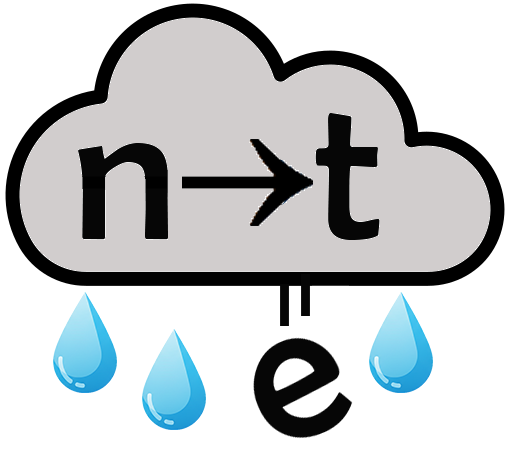
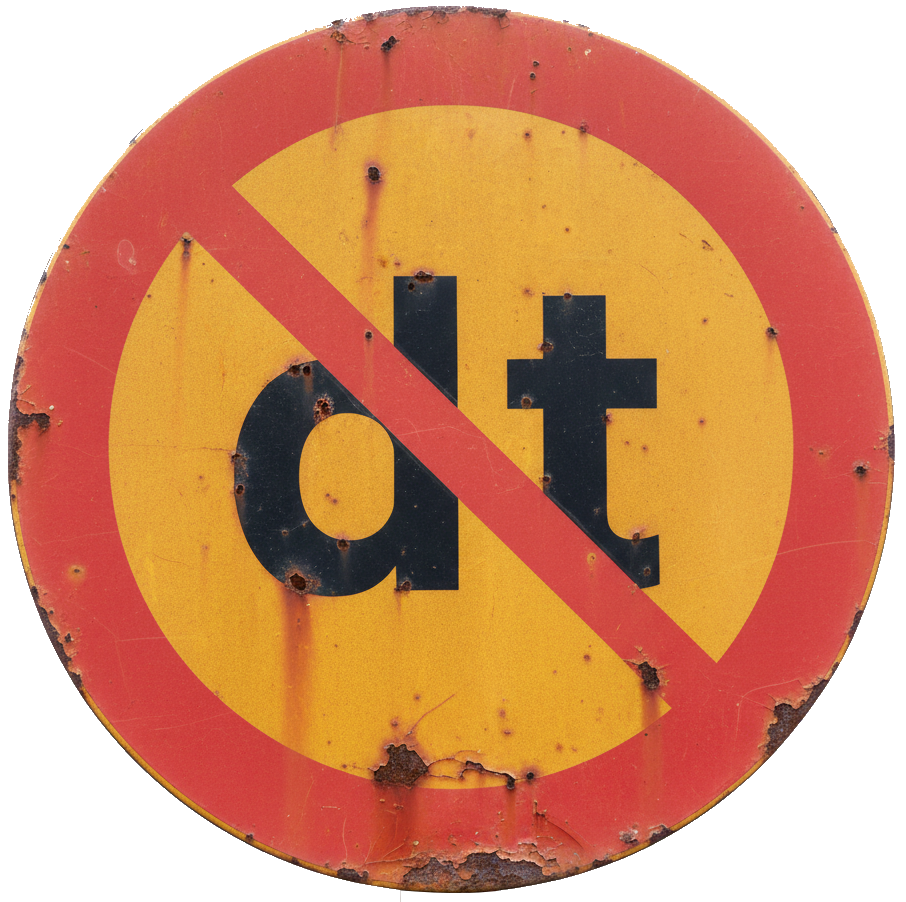
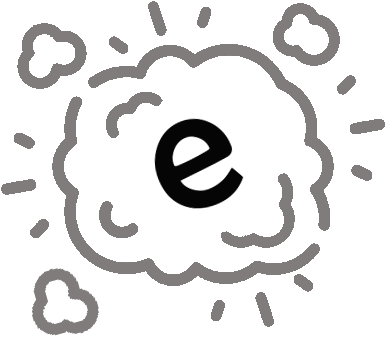
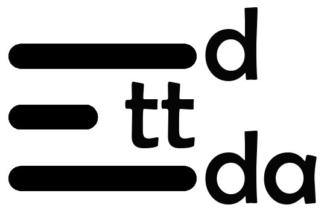
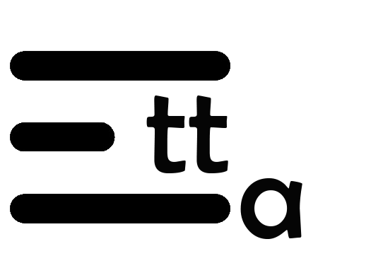
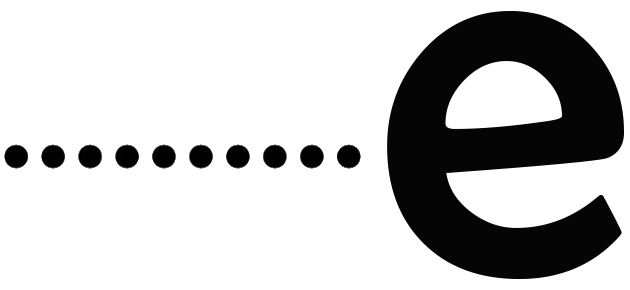

härlig
neuter +t | plural +a
79%

Spelling adjustment
allmän | allmänt | allmänna
4%

Singular twins
svart | svart | svarta
5%

ends -en
öppen | öppet | öppna
3%

Forbidden since 1906
hård | hårt | hårda
3%

ends -el or -er
vacker | vackert | vackra
2%

long +d | short | long
röd | rött | röda
1%

long | short | long
ny | nytt | nya
1%

Plural end: e
korkad | korkat | korkade
1%
Irregular, inflexible, defective
liten | litet | små
1%